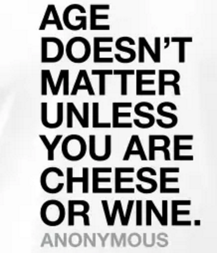

J’ai repris les études de psychologie en France à l’âge de 24 ans. Aujourd’hui âgé de 31 ans, je vais bientôt défendre ma thèse de doctorat (en Allemagne) et partir faire un postdoc à Taiwan.
J’ai financé mes études en travaillant (animateur, MacDo, Decathlon puis cours particuliers et assistant de recherche). J’ai donc plus ou moins réussi à suivre le mode de vie de mes amis déjà inscrits dans la vie active. Mon âge n’a été qu’un avantage de la licence au doctorat. Dans ma promo, cinq étudiants de plus 40 ans ont repris les cours avec moi, ils sont aujourd’hui tous psychologues.
Reprendre les études a radicalement changé ma vie pour le meilleur. Beaucoup plus d’amis, de voyages, de passions, de sports, d’intérêts, d’objectifs, d’expériences… Surtout, des horizons beaucoup plus élargis dans tous les domaines.
Après, quelques paramètres sont à prendre sérieusement en compte:
-Si tu n’as pas lu ou appris de nouvelles choses pendant de longues années et du jour au lendemain, tu veux te concentrer et apprendre 40 heures par semaine, c’est possible que tu en baves un peu.
-Si tu n’as jamais étudié la discipline dans laquelle tu souhaites t'engager et tu veux directement intégrer un master, convaincre le jury de sélectionner ta candidature va être un grand défi.
-Si tu as bien gagné ta vie pendant les années précédentes, il te sera peut être éreintant d’avoir un job étudiant et de reprendre un mode de vie à 500 euros/mois. En même temps, les offres et tarifs étudiants permettent de vivre très correctement.
-Il te faudra certainement faire le deuil de plusieurs soirées et weekends pour finir des dossiers ou réviser davantage. Si tu as des obligations (si tu es parent par exemple), il te faudra devenir pro de l’organisation.
Réussir ses études, ce n’est pas avoir des fonctions cognitives extraordinaires, ni un âge particulier. Si tu as envie d’apprendre, si tu es capable de t’assoir sur une chaise et de te concentrer sur un sujet plus de 10 minutes et si tu ne te décourages pas à la première difficulté, alors fonce!

*L'age ne compte que pour le fromage ou le vin